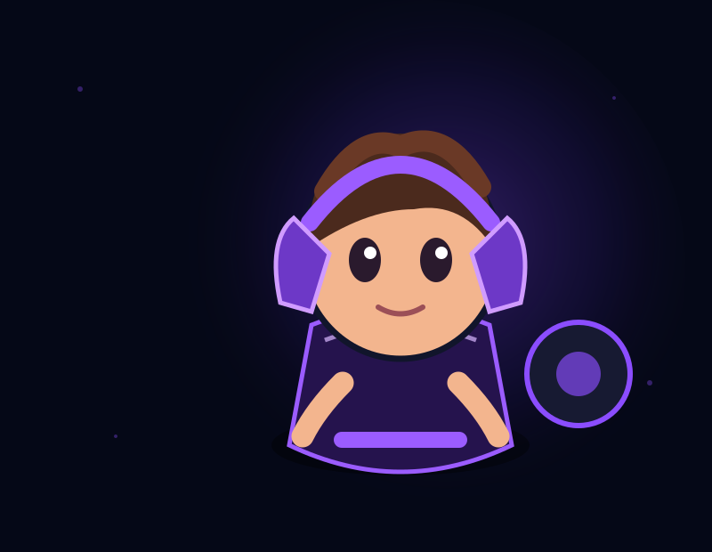
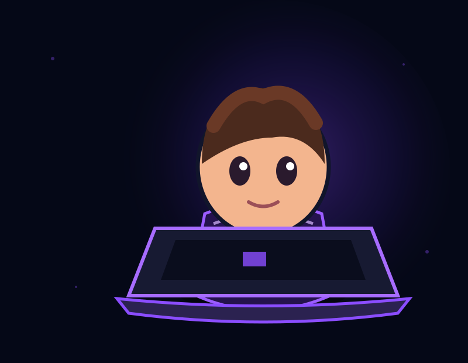
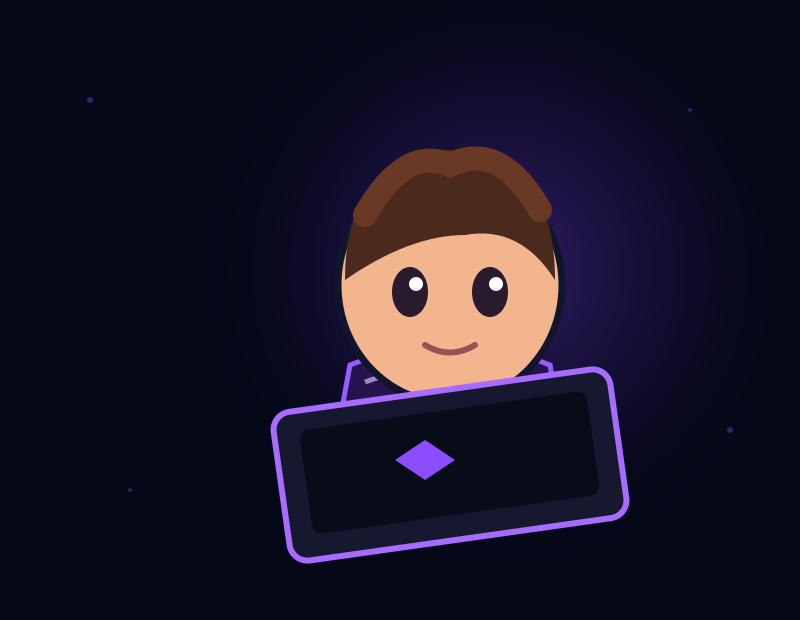
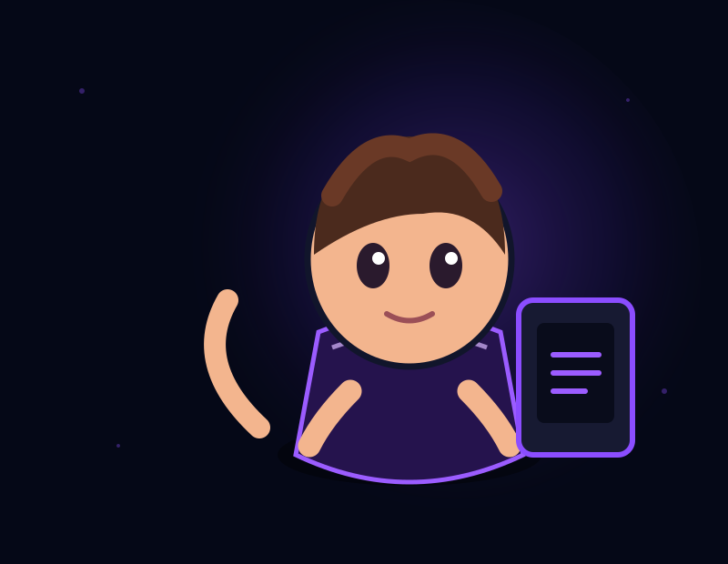

Infancia y adolescencia
Emociones, hábitos, pantallas, autoestima y acompañamiento familiar.
Un espacio para hablar de salud mental, desarrollo y tecnología sin prejuicios, con herramientas prácticas para niños, adolescentes y familias.

La tecnología forma parte de la vida cotidiana. Por eso también puede formar parte de una conversación psicológica útil y sin prejuicios.
Me interesa especialmente la intersección entre salud mental, desarrollo, videojuegos y tecnología: hábitos digitales, regulación emocional, diseño de recompensas, uso de pantallas y prevención.
“No se trata de demonizar la tecnología. Se trata de aprender a relacionarnos con ella.”

Emociones, hábitos, pantallas, autoestima y acompañamiento familiar.
Orientación para comprender y acompañar el uso saludable de la tecnología.
Relación con videojuegos, recompensas, motivación y prevención.
Contenido sobre infancia, gaming, neurobiología, regulación emocional y tecnología explicado de forma clara.

Elige la forma que te resulte más cómoda.
